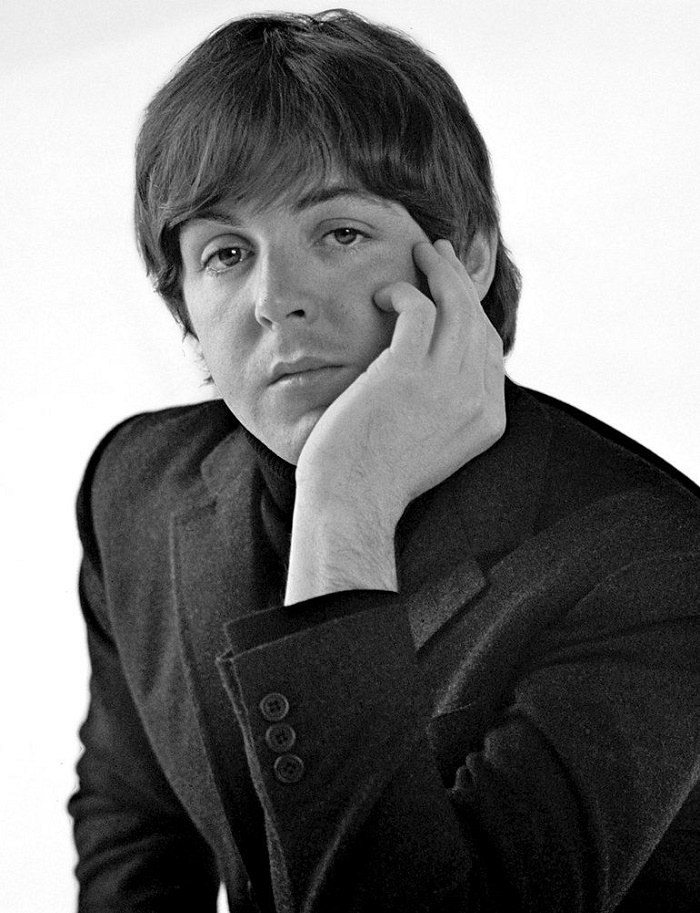
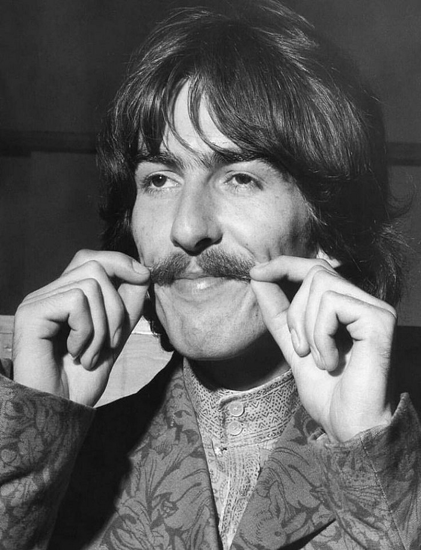
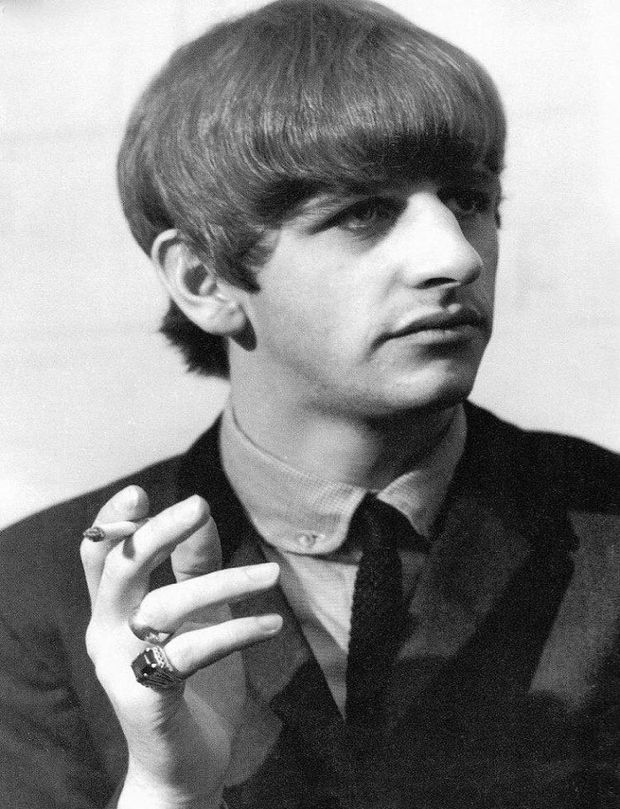

1. Джон Ленон
 Джон Ленон
Джон Ленон
(ритм-гитара, соло-гитара, клавишные, бубен, маракасы, бас-гитара, губная гормошка, вокал)


Джон Ленон
(ритм-гитара, соло-гитара, клавишные, бубен, маракасы, бас-гитара, губная гормошка, вокал)
 Пол Макартни
(бас-гитара,клавишные, ударные, гитара, вокал)
 Джордж Харрисон
(соло-гитара, ритм-гитара, ситар, бубен, клавишные, вокал)
 Ринго Стар
(ударные, ритм-гитара, бубен, маракасы, коубелл, бонги, клавишные, вокал)
Также в разное время в составе группы выступали:
После распада группы, произошедшего в 1970 году, каждый из её участников начал сольную карьеру.